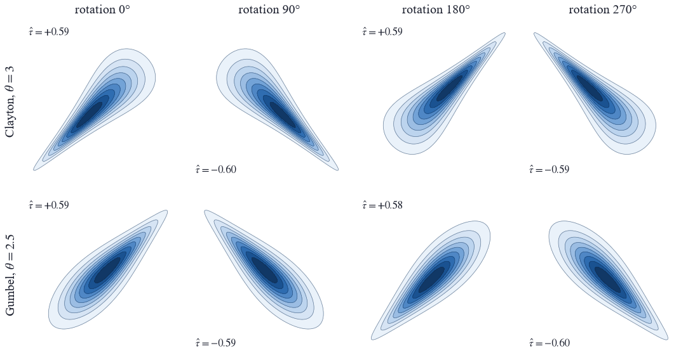
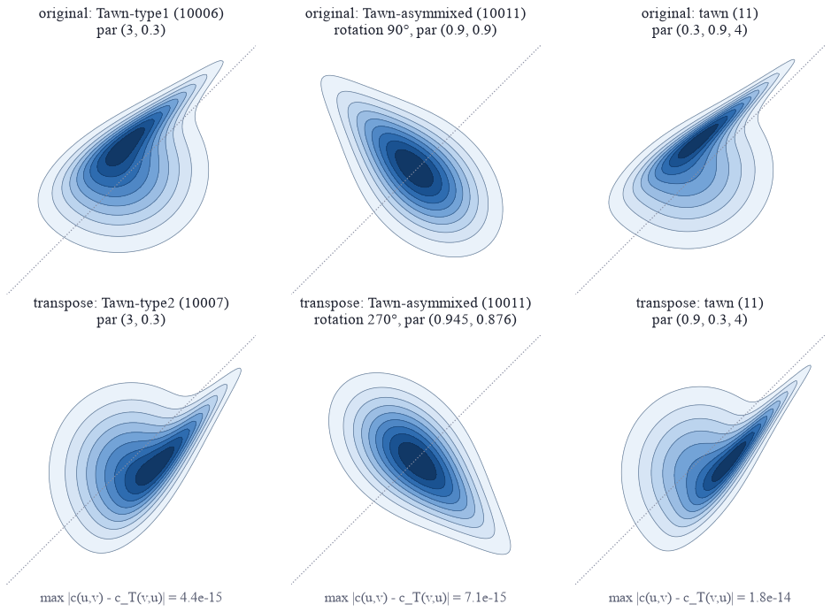

Rotations and asymmetry¶
Many copula families can only express positive dependence, and many have tail dependence in one corner only. Rotating the unit square extends each such family to the other three corners; transposing it (swapping the two arguments) matters for families that are not symmetric in their arguments. This page defines both operations exactly as fortvine implements them.
Definition¶
A rotation by \(r \in \{0, 90, 180, 270\}\) degrees turns the data counter-clockwise, following vinecopulib. With \(c\) the density of the unrotated family, the rotated densities are
and the distribution functions
The h-functions follow by differentiation. Writing \((a, b)\) for the rotated point that is passed to the unrotated family and \(g_1, g_2\) for its h-functions there:
| rotation | \((a, b)\) | \(h_1(u_1, u_2)\) | \(h_2(u_1, u_2)\) |
|---|---|---|---|
| 0 | \((u_1, u_2)\) | \(g_1(a, b)\) | \(g_2(a, b)\) |
| 90 | \((u_2, 1-u_1)\) | \(g_2(a, b)\) | \(1 - g_1(a, b)\) |
| 180 | \((1-u_1, 1-u_2)\) | \(1 - g_1(a, b)\) | \(1 - g_2(a, b)\) |
| 270 | \((1-u_2, u_1)\) | \(1 - g_2(a, b)\) | \(g_1(a, b)\) |
The inverse h-functions are mapped in the same way, so every rotated copula has exact
hinv1 / hinv2 and can be used in Rosenblatt transforms and simulation.
Which families rotate¶
rotation is ignored by families that already cover both signs of dependence or are
radially symmetric:
| rotationless | codes |
|---|---|
| independence | 0 |
| Gaussian, Student | 1, 2 |
| Frank | 5 |
| Plackett, FGM, AMH | 12, 13, 14 |
| TLL, Bernstein (nonparametric; the estimate itself carries any orientation) | 24, 25 |
Every other family, including all generic families, accepts the four rotations. The catalogue has a "rotations" column.
Rotations, negative dependence and tails¶
A 90- or 270-degree rotation reverses the sign of concordance: if the unrotated family has Kendall's \(\tau > 0\), the rotated one has \(-\tau\). A 180-degree rotation keeps \(\tau\) and moves tail dependence to the opposite corner (the survival copula). For a family whose tail dependence sits at the lower-left corner (Clayton) or the upper-right corner (Gumbel, Joe), the corners after rotation are:
| base tail | 0 | 90 | 180 | 270 |
|---|---|---|---|---|
| lower-left, \((0, 0)\) (Clayton type) | \((0,0)\) | \((1,0)\) | \((1,1)\) | \((0,1)\) |
| upper-right, \((1, 1)\) (Gumbel type) | \((1,1)\) | \((0,1)\) | \((0,0)\) | \((1,0)\) |
Here \((1, 0)\) means \(u_1 \to 1\) while \(u_2 \to 0\). Two-tailed families such as BB1 or BB7 carry both of their tails along.

In selection, the sign of the sample \(\tau\) decides which rotations are tried: 0 and 180 for
\(\tau > 0\), 90 and 270 for \(\tau < 0\). Preselection may then remove one of the two, depending
on where the data show stronger tail dependence
(details). With
ctl%allow_rotations = .false. only rotation 0 is used, so negatively dependent pairs can
only get rotationless families.
Asymmetric families and edge flips¶
A copula is exchangeable if \(C(u_1, u_2) = C(u_2, u_1)\). Most classical families are, but some are not:
- Tawn (code 11) with \(\psi_1 \neq \psi_2\);
- generic families with an asymmetric Pickands function (inner index
ie=mod(fam, 100)from 5 to 13) and every Khoudraji wrapper (codes 20000 and above);gen_exch(fam)tells which; - TLL and Bernstein estimates, which need not be symmetric.
For these the order of the arguments matters. Inside a vine the first argument of the pair
copula of edge \((e, t)\) is the variable order(e) (see
Vine copulas). During selection fortvine builds the
trees from unordered edges and orients them only at the end, when the trees are converted to
the natural-order matrix. If that conversion needs an edge with its two variables swapped, the
fitted pair copula is replaced by its exact transpose \(C^\top(u_1, u_2) = C(u_2, u_1)\),
not refitted:
| family | transpose |
|---|---|
| Tawn | swap \(\psi_1 \leftrightarrow \psi_2\) (parameters 1 and 2) |
| TLL, Bernstein | transpose the density grid / cell-weight matrix |
| generic, asymmetric logistic / negative logistic (05, 08) | swap \(\psi_1 \leftrightarrow \psi_2\) |
| generic, their types 1 and 2 (06 \(\leftrightarrow\) 07, 09 \(\leftrightarrow\) 10) | change the code, keep \((\theta, \psi)\) |
| generic, asymmetric mixed (11) | \((\theta, \phi) \mapsto (\theta + 3\phi, -\phi)\), then back to \((\theta, \kappa)\) |
| generic, Khoudraji-Husler-Reiss / Khoudraji-mixed (12, 13) | swap \(a \leftrightarrow b\) |
| any Khoudraji wrapper (\(k = 2\)) | swap \(a \leftrightarrow b\) |
| exchangeable families | nothing |
The rotation is transposed too: since \((C_{90})^\top = (C^\top)_{270}\) and vice versa, a
flipped edge with rotation 90 becomes 270 and the other way round; 0 and 180 stay. The routine
for the generic families is the public gen_flip(fam, par), which may change both the code and
the parameters in place (Python: fv.gen_flip(family, parameters) returns the new code and
parameters; R: gen_flip(model) returns the transposed bicop_dist, with 90 and 270 swapped).
Why the transpose is exact
For the outer generator nothing changes (it is symmetric in \(s\) and \(t\)). For the Pickands part, transposition maps \(A(w)\) to \(A(1-w)\); the asymmetric logistic models swap their asymmetry weights, and the asymmetric mixed model \(A(w) = 1 - (\theta+\phi)w + \theta w^2 + \phi w^3\) becomes the same polynomial with \(\theta' = \theta + 3\phi\), \(\phi' = -\phi\). For the Khoudraji construction \(C_K(u,v) = u^{1-a}v^{1-b}C(u^a, v^b)\) with exchangeable \(C\), swapping the arguments is the same as swapping \(a\) and \(b\).

If you build a vine by hand with asymmetric pair copulas, you are responsible for the
orientation: the copula you assign to edge \((e, t)\) is applied with order(e) as its first
argument.
Example¶
program rot_demo
use fortvine_api
implicit none
integer, parameter :: dp = kind(1.0d0), n = 2000
type(fv_bicop) :: c, t
real(dp) :: u(4) = [0.1_dp, 0.3_dp, 0.6_dp, 0.95_dp], v(4) = [0.7_dp, 0.2_dp, 0.9_dp, 0.4_dp]
real(dp) :: p1(4), p2(4), x1(n), x2(n), w(n)
integer :: r, k, i, fams(3) = [FV_TAWN, 10011, 10006]
real(dp) :: pars(3, 3)
! Kendall's tau of a Clayton(3) sample under each rotation
c%family = FV_CLAYTON; c%par(1) = 3.0_dp
call random_seed(put=[(i, i = 1, 33)])
call random_number(x1); call random_number(w)
do r = 0, 270, 90
c%rotation = r
call c%hinv1(x1, w, x2)
print '(a,i4,a,f7.3)', 'rotation', r, ': tau =', fv_kendall_tau(x1, x2)
end do
! exact transpose of asymmetric families: c_T(u, v) = c(v, u), also under rotation 90 <-> 270
pars(:, 1) = [0.4_dp, 0.9_dp, 3.0_dp]; pars(:, 2) = [0.6_dp, 0.3_dp, 0.0_dp]; pars(:, 3) = [2.5_dp, 0.4_dp, 0.0_dp]
do k = 1, 3
c%family = fams(k); c%par = pars(:, k); c%rotation = 90
t = c
if (t%family == FV_TAWN) then
t%par(1:2) = c%par([2, 1]) ! Tawn: swap psi1 and psi2
else
call gen_flip(t%family, t%par) ! generic families
end if
t%rotation = 270
call c%pdf(u, v, p1); call t%pdf(v, u, p2)
print '(5a,es9.2)', 'transpose of ', trim(fv_fam_name(c%family)), ' is ', trim(fv_fam_name(t%family)), &
': max |c(u,v) - c_T(v,u)| =', maxval(abs(p1 - p2))
end do
end program rot_demo
import numpy as np
import fortvine as fv
n = 2000
uv = np.array([[0.1, 0.7], [0.3, 0.2], [0.6, 0.9], [0.95, 0.4]])
# Kendall's tau of a Clayton(3) sample under each rotation
rng = np.random.default_rng(1)
x1, w = rng.random(n), rng.random(n)
for r in (0, 90, 180, 270):
c = fv.Bicop("clayton", r, [3.0])
x2 = c.hinv1(np.column_stack([x1, w]))
print(f"rotation{r:4d}: tau ={fv.kendall_tau(x1, x2):7.3f}")
# exact transpose of asymmetric families: c_T(u, v) = c(v, u), also under rotation 90 <-> 270
for fam, par in [("tawn", [0.4, 0.9, 3.0]), (10011, [0.6, 0.3]), (10006, [2.5, 0.4])]:
c = fv.Bicop(fam, 90, par)
if c.family == "tawn":
tfam, tpar = c.family_code, c.parameters[[1, 0, 2]] # Tawn: swap psi1 and psi2
else:
tfam, tpar = fv.gen_flip(c.family_code, c.parameters) # generic families
t = fv.Bicop(tfam, 270, tpar)
err = np.max(np.abs(c.pdf(uv) - t.pdf(uv[:, ::-1])))
print(f"transpose of {c.family} is {t.family}: max |c(u,v) - c_T(v,u)| ={err:9.2E}")
library(fortvine)
n <- 2000
uv <- rbind(c(0.1, 0.7), c(0.3, 0.2), c(0.6, 0.9), c(0.95, 0.4))
# Kendall's tau of a Clayton(3) sample under each rotation
set.seed(1)
x1 <- runif(n); w <- runif(n)
for (r in c(0, 90, 180, 270)) {
x2 <- hbicop(cbind(x1, w), 1, bicop_dist("clayton", r, 3), inverse = TRUE)
cat(sprintf("rotation%4d: tau =%7.3f\n", r, cor(x1, x2, method = "kendall")))
}
# exact transpose of asymmetric families: c_T(u, v) = c(v, u), also under rotation 90 <-> 270
models <- list(bicop_dist("tawn", 90, c(0.4, 0.9, 3)), bicop_dist(10011, 90, c(0.6, 0.3)),
bicop_dist(10006, 90, c(2.5, 0.4)))
for (cop in models) {
tr <- if (cop$family == "tawn") {
bicop_dist("tawn", 270, cop$parameters[c(2, 1, 3)]) # Tawn: swap psi1 and psi2
} else {
gen_flip(cop) # generic families (rotation 90 -> 270)
}
err <- max(abs(dbicop(uv, cop) - dbicop(uv[, 2:1], tr)))
cat(sprintf("transpose of %s is %s: max |c(u,v) - c_T(v,u)| =%9.2E\n", cop$family, tr$family, err))
}
Output:
rotation 0: tau = 0.620
rotation 90: tau = -0.594
rotation 180: tau = 0.612
rotation 270: tau = -0.614
transpose of tawn is tawn: max |c(u,v) - c_T(v,u)| = 4.44E-16
transpose of Tawn-asymmixed is Tawn-asymmixed: max |c(u,v) - c_T(v,u)| = 1.11E-15
transpose of Tawn-type1 is Tawn-type2: max |c(u,v) - c_T(v,u)| = 4.44E-16
rotation 0: tau = 0.586
rotation 90: tau = -0.602
rotation 180: tau = 0.588
rotation 270: tau = -0.593
transpose of tawn is tawn: max |c(u,v) - c_T(v,u)| = 8.88E-16
transpose of Tawn-asymmixed is Tawn-asymmixed: max |c(u,v) - c_T(v,u)| = 1.11E-15
transpose of Tawn-type1 is Tawn-type2: max |c(u,v) - c_T(v,u)| = 4.44E-16
rotation 0: tau = 0.595
rotation 90: tau = -0.596
rotation 180: tau = 0.586
rotation 270: tau = -0.599
transpose of tawn is tawn: max |c(u,v) - c_T(v,u)| = 8.88E-16
transpose of Tawn-asymmixed is Tawn-asymmixed: max |c(u,v) - c_T(v,u)| = 1.11E-15
transpose of Tawn-type1 is Tawn-type2: max |c(u,v) - c_T(v,u)| = 4.44E-16
The theoretical \(\tau\) of Clayton(3) is \(3/5 = 0.6\); the four samples differ only by sampling noise and sign (and between the languages, which draw different uniforms). The last three lines confirm that the transposed, 270-degree copula evaluated at swapped arguments equals the original 90-degree copula to rounding.